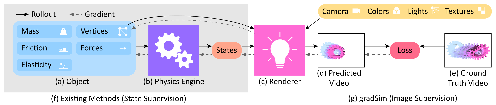

Motivation
Cloth simulations are EVERYWHERE. Gaming, AR/VR, robotic manipulation, digital fashion, synthetic data generation for training VLMs. But cloth dynamics aren't just about visuals anymore, but also about bridging perception and physics and enabling robots to handle deformable objects precisely.
Enter: Differentiable simulators. They work on the idea that instead of making your physics engine a black box, make it fully differentiable so you can optimize physical parameters using gradient descent.
The Math Behind Differentiable Simulators
It starts with an initial guess for physical parameters \(\theta\) (mass, friction, stiffness, geometry, etc.). The differentiable physics engine simulates motion and deformation frame-by-frame, giving you object states at each timestep: positions, velocities, mesh vertices.
These states get passed into the differentiable renderer, which produces rendered video frames from the simulated scene. These rendered frames are compared to the ground truth video using pixel-level loss.
Backpropagate that error through both the renderer and the physics engine simultaneously. The gradients flow back to \(\theta\), giving you \(\partial L / \partial \theta\) which corresponds to the exact sensitivity of pixel error to each physical parameter. Hence \(\theta\) updates, rinse, repeat. The only thing now that stands between the physics and the pixels is one loss function.

Essentially, the simulation is a map:
\[ \text{Sim} : \mathbb{R}^P \times [0,1] \mapsto \mathbb{R}^{H \times W}, \quad \text{Sim}(p,\, t) = I \]where \(p \in \mathbb{R}^P\): simulation state and parameters, \(t\): simulation time, \(I\): rendered image of height \(H\) and width \(W\) at timestep \(t\).
If \(\text{Sim}\) is differentiable, then \(\nabla \text{Sim}(p, t)\) tells you how an infinitesimal perturbation \(\delta p\) changes the output — from \(I\) to \(I + \nabla \text{Sim}(p,t)\,\delta p\). This enables gradient-based optimization: define a loss \(\mathcal{L}(I,\, I_{\text{target}})\) over image space and descend along \(-\nabla \text{Sim}\) to minimize it:
\[ p^* = \arg\min_p \; \mathcal{L}\!\left(\text{Sim}(p,\, t),\; I_{\text{target}}\right) \]Why This Is An Engineering Problem
Normal renderers aren't differentiable. Pixels are discrete and triangle edges are hard. Differentiable renderers like SoftRas replace these with smooth approximations: probabilistic triangle boundaries where pixels blend as geometry moves, making \(\partial I / \partial (\text{mesh position})\) well-defined.
On the physics side, you're differentiating through an ODE integrator across 100+ timesteps. Physics is full of discontinuities. The gradient flow has to survive all of these without exploding or vanishing. That’s the hard part.
gradSim is one such open source differentiable simulator and renderer. I wanted to dig deeper into this codebase and rewriting it in JAX seemed like a lowkey fun way of going about it. In the process I also grew familiar with the JAX way of thinking about computation.
Read on for a deeper dive.
The Intuitive Difference
Frameworks encode worldviews.
PyTorch's worldview: Objects hold states, gradients accumulate, you call backprop, and the computation graph builds itself as your code runs; tracking everything automatically. Your code is quite literally living and breathing.
JAX's worldview: Your code is just math, where functions take inputs and return outputs.
Optimizers
Optimizers are black boxes in PyTorch, that you call in your code, and your parameters update.
JAX forces you to write the optimizer yourself. It feels mean until you realize that the optimizer state is just data that you can inspect, save mid-training and modify the update rule on the fly. The black box we started out with turns out to be just differential equations.
"Neural Networks"
Most of the neural networks in the original codebase were just single matrix multiplications with a tanh on top.
Porting it to JAX forces you to think about what it's actually computing. And the answer was usually a straightforward weighted sum.
A weight matrix is as simple as it gets. If you genuinely need modular neural architectures, libraries like Flax exist. But the default should be: write what you want and not what the framework encourages. JAX forces you to be explicit about what you want.
Translating OOP
Physics simulations are intuitively stateful. You have a model object that represents your scene with springs, masses, friction parameters. These parameters are read from the object’s state and are updated, rinse, repeat. (Standard OOP)
PyTorch handles this well because it is fundamentally Object-Oriented. JAX on the other hand: not quite.
Mutating inside a traced function would break everything. The fix: rebuild the scene configuration from parameters every forward pass. As insane as that sounds, it's simply re-specifying the configuration every forward pass, not running any physics. So, reconstructing that each time costs almost nothing.
A PyTorch design flaw this exposed: the model object binds three conceptually different things: Static scene topology, trainable physical parameters, and time-varying simulation state into the same data structure. JAX separates these cleanly to the point that they're traceable by eye. Configuration as structure, parameters as data, state as explicit input/output. It sure makes the code harder to write but also impossible to misunderstand.
Small Things That Compound
Device Management
JAX figures out device management automatically. This in PyTorch would mean constantly shuttling tensors between CPU and GPU, tracking which device each object lives on, and debugging shape mismatches that turn out to be device mismatches. This feels like a minor convenience until you add up the cumulative hours spent chasing down cuda calls that shouldn't have been necessary in the first place.
Type Strictness
PyTorch silently converts Python tuples to tensors if you try to add them. Convenient! But also: hides type mismatches that should have been errors.
JAX throws errors immediately instead of letting type mismatches silently propagate into useless gradient errors later. Annoying until it saves you from debugging sessions where the error is three function calls deep and tells you nothing.
Explicit Randomness
PyTorch has a global random state. JAX makes you thread random keys through your functions explicitly. For my use case (physics simulation where randomness is mostly in data generation), this is mostly irrelevant, but the design choice is very evident here. JAX would rather be verbose than hide state.
Benchmarks
I ran benchmarks comparing jaxsim against the original PyTorch implementation, on CPU and on an RTX 4090 GPU. Three things were measured:
- The DFlex spring-mass chain, written as pure functions over pytrees, which is JIT-compilable.
- The RigidBody Simulator, which mutates Python object state each step and is not JIT-compilable.
- A full optimization loop, thirty Adam iterations end to end, to see what JIT compilation actually costs in practice rather than in isolation.
DFlex spring-mass chain (forward pass)
Same chain of spring-connected particles, same semi-implicit Euler integrator, on both sides.
| Particles | CPU torch (ms) | CPU jax, jit (ms) | CPU speedup | GPU torch (ms) | GPU jax, jit (ms) | GPU speedup |
|---|---|---|---|---|---|---|
| 10 | 1.88 | 0.10 | 19x | 2.12 | 0.13 | 17x |
| 50 | 2.14 | 0.04 | 54x | 2.12 | 0.12 | 18x |
| 200 | 3.18 | 0.06 | 53x | 2.12 | 0.13 | 17x |
| 1000 | 8.42 | n/a | — | 2.16 | n/a | — |
n/a: the unrolled loop was too large to compile in reasonable time at that size. The gradient pass tells the same story, 13x to 112x depending on hardware and particle count.
On CPU, torch's time grows with particle count while jax stays flat, because XLA fuses the whole chain into one compiled kernel regardless of size, so the speedup compounds with N. On GPU, torch is flat too, because at this scale both frameworks are bound by kernel-launch latency rather than actual compute, so the speedup stays roughly constant instead of growing.
RigidBody Simulator (forward pass)
Translating OOP above describes the fix applied to dflex: rebuild the scene from parameters every forward pass. This module never got that treatment, it still mutates Python object attributes each step, so it cannot be jit-compiled on either side.
| Bodies | CPU torch (ms) | CPU jax (ms) | GPU torch (ms) | GPU jax (ms) |
|---|---|---|---|---|
| 1 | 14.07 | 139.32 | 34.3 | 319.7 |
| 5 | 69.95 | 692.16 | 170.2 | 1615.3 |
| 20 | 282.98 | 2754.13 | 803.5 | 6577.0 |
| 100 | — | — | 4001.3 | 33305.2 |
torch is about 10x faster on CPU and 8-9x faster on GPU, consistently across every size tested. Same library, same algorithm on both sides of this table — the only variable is whether the code is written as pure functions or as mutated state.
End-to-end optimization loop
Thirty Adam iterations on the spring-mass chain, each one a full forward simulation, backward pass, and optimizer step, optimizing initial particle velocities to hit a target height. Both frameworks converged to the identical loss trajectory, which was the correctness check before trusting the timing numbers at all.
CPU. Below about 690 iterations, torch's total wall-clock is lower, because jax's one-time JIT compile (roughly 1.2 seconds for this problem size) hasn't paid for itself yet. Above that, jax wins, because its per-iteration cost is about 8.5x lower once warmed up. On GPU the same crossover moves out to about 770 iterations, since the GPU compile itself takes longer (roughly 2.2 seconds).
The one result that surprised me: on GPU, both frameworks were slower than on CPU for almost every benchmark above, torch's dflex forward pass at large particle counts being the one exception. These simulations top out at around a thousand particles or a hundred bodies, which isn't enough parallel work per kernel launch to hide the fixed cost of dispatching to the GPU and back. A GPU has to do enough work per launch to be worth the trip, and a spring-mass chain this size doesn't clear that bar.
When PyTorch Is Actually Better
The abstractions in PyTorch are great when you're learning, or for quick experiments where the architecture is dynamic.
But for a differentiable physics simulator where:
- Correctness matters more than iteration speed
- The parts you can write as pure functions get an order of magnitude faster once you JIT them
- Gradient flow debugging is crucial
- The code runs for hours on a cluster
you NEED JAX's enforced constraints and explicitness, rightly so.
This made me realise backpropagation much more intuitively.
You see the actual update equations and calculus' chain rule spelled out in code.
When your entire goal is computing df/dx, having 'f' actually BE a function and not an object that mutates makes everything cleaner.
You can still differentiate through code that mutates state, the RigidBody Simulator above proves that, but you pay for it: 8-10x slower than the pure-function version, on both CPU and GPU.
Hence, for differentiable physics, JAX's functional worldview fits best when you can actually afford to rewrite for it.